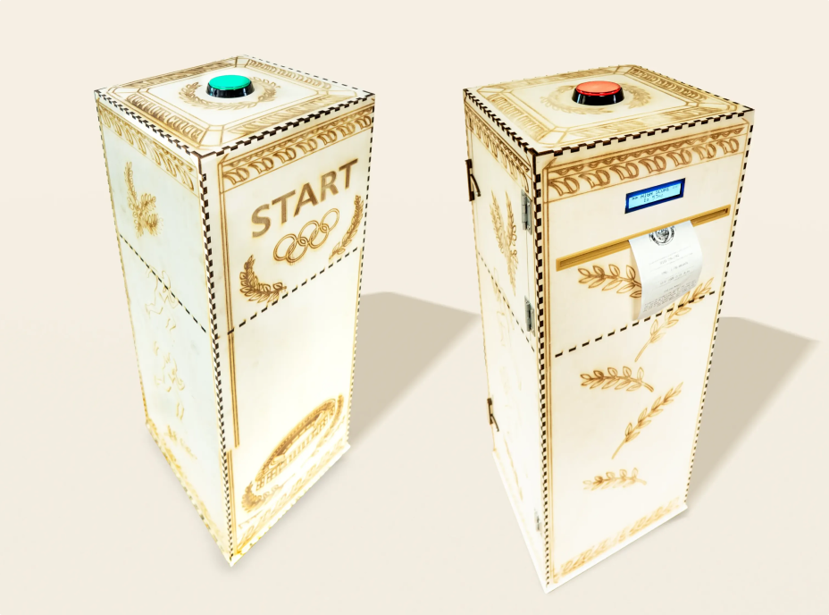

An interactive running installation with two pillars, a timer, a high score and a printed ticket.
The assignment
Together with two other students, I explored how a complete experience loop works and what matters when designing an interactive installation. Our goal was to design and build a prototype that covers every stage of that loop: attract, entry, engage, exit and extend.
The concept
We created the Speed Challenge, an interactive running experience built around two physical pillars that can be placed in different environments. One pillar is the start and the other is the finish. Each has a physical button: players start the challenge at the first pillar and stop the timer at the second, as fast as they can.
At the finish pillar, players see their final time and compare it with the current high score. This competitive element invites them to try again and beat their own result. A screen and sound feedback make the experience feel responsive and engaging.
Extending the experience
To take the experience beyond the installation itself, we built a ticket printer into the finish pillar. It prints a physical ticket with the player's final time and a fun fact about athletics, giving them something tangible to take home.
How it's built
- A Raspberry Pi and two ESP32-C3 controllers
- Arcade buttons, a timer, an LCD screen and a piezo speaker
- A ticket printer inside the finish pillar
- C++ and Python, with Socket.IO handling real-time communication between the components
What I learned
This project showed me how important the complete experience loop is. Instead of focusing only on the interaction itself, we designed the whole experience: attracting people, getting them started, keeping them engaged, giving a clear ending, and offering a reason to remember it afterwards.